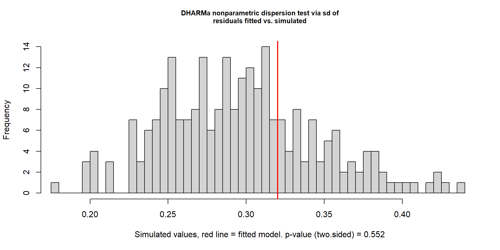
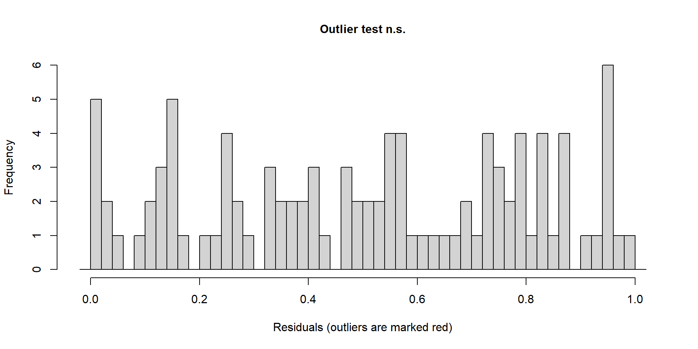

Análises Estatísticas
no R
Estatística Inferencial
Curso:
Introdução à manejo, visualização e análise de dados com R
9 de janeiro de 2026
Análises Estatísticas - Pressupostos
E se os dados não forem paramétricos? Não Paramétricos

Análises Estatísticas - Pressupostos
Por que verificar pressupostos?
1. Normalidade: Uma curva de normalidade (ou curva de Gauss/distribuição normal) é uma distribuição de probabilidade simétrica, em forma de sino, onde os valores mais frequentes ficam no centro e as probabilidades diminuem igualmente para ambos os lados.
É definida por dois parâmetros: a média (localização do pico) e o desvio padrão (largura da curva).
- Testes paramétricos (t-test, ANOVA) assumem distribuição normal
- Se violada: taxa de erro Tipo I inflada (falsos positivos)
- Consequência: podemos encontrar diferenças que não existem!
- Solução: transformação de dados ou testes não-paramétricos

Análises Estatísticas - Pressupostos
Por que verificar pressupostos?
2. Homocedasticidade: os grupos apresentam variações semelhantes
- Variâncias desiguais afetam a estimativa do erro padrão
- Consequência: intervalos de confiança e p-values incorretos
- Grupos com maior variância têm influência desproporcional
- Solução: correção de Welch, transformação ou testes robustos

Análises Estatísticas - Pressupostos
Por que verificar pressupostos?
3. Independência: pressupõe que o valor observado em uma unidade amostral não influencia nem é influenciado pelos valores das demais.
Quando essa suposição é violada, a lógica inferencial do teste é comprometida.
Exemplos de dependência: Medidas repetidas no mesmo indivíduo (ex.: várias medições ao longo do tempo).
Consequência: subestimação do erro padrão → p-values artificialmente baixos
Os pressupostos estatísticos não são sobre os dados brutos, mas sobre os erros do modelo.
Como eles são desconhecidos, usamos os resíduos como sua melhor aproximação.
O modelo captura o padrão sistemático dos dados, mas não explica toda a variabilidade observada.
O resíduo carrega o que não foi explicado pelo modelo — ruído natural e variáveis não modeladas

Análises Estatísticas - Pressupostos
Distribuição de Poisson
Discreta, assimétrica à direita, definida por um único parâmetro (λ), usada para eventos raros. Para valores pequenos de λ, a distribuição é fortemente assimétrica à direita, com muitos valores baixos e poucos valores altos: Moda < Mediana < Média
- À medida que λ aumenta, a distribuição torna-se mais simétrica, e média, mediana e moda se aproximam, podendo se comportar de forma semelhante a uma distribuição normal.
Exemplos: Número de espécies por parcela, contagem de sementes, avistamentos de animais

Análises Estatísticas - Pressupostos
Distribuição Binomial
Discreta, número finito de resultados possíveis, pode ser simétrica ou assimétrica, depende dos parâmetros. Descreve o número de sucessos em n tentativas independentes, cada uma com a mesma probabilidade de sucesso p.
Quando p = 0,5, a distribuição é simétrica, e média ≈ mediana ≈ moda, pois sucessos e fracassos têm a mesma probabilidade, concentrando os valores no centro.
Quando p ≠ 0,5, a distribuição torna-se assimétrica (p pequeno → assimetria à direita. p grande → assimetria à esquerda).
- Nesses casos, média, mediana e moda não coincidem, pois a probabilidade desigual desloca a concentração dos valores para um dos lados.
Exemplos: Sobrevivência de indivíduos, presença/ausência de espécies, sucesso de germinação, ocorrência de ninhos

Análises Estatísticas - Pressupostos
Teste de Hipóteses
H0: hipótese nula - sem efeito e H1: hipótese alternativa - existe efeito
Sempre testamos se a H0 é verdadeira, se for, não há efeito e paramos de analisar, concluindo que nossa H1 não pode ser corroborada
No entanto, se podemos rejeitar a H0 com um erro muito pequeno (digamos, < 5%), podemos assumir que H1 é verdadeira e explica o fato que estamos observando

Análises Estatísticas - (χ²)
Chi-Quadrado
Utiliza uma tabela de contingência que contabiliza a quantidade de observações para cada grupo de amostragem (ex: quantidade de espécies de floresta e savana em cada matriz de amostragem)


Análises Estatísticas - (χ²)
Chi-Quadrado
Utiliza uma tabela de contingência que contabiliza a quantidade de observações para cada grupo de amostragem (ex: quantidade de espécies de floresta e savana em cada matriz de amostragem)

Degrees of Freedom (df): quantidade de informação independente disponível para estimar variabilidade (1-N).
Análises Estatísticas - (χ²)
Chi-Quadrado

Teste de Normalidade
Q–Q plot (Quantile–Quantile plot)
Compara os quantis dos seus dados com os quantis de uma distribuição teórica para avaliar visualmente se os dados seguem uma distribuição normal e em que medida se desviam dela.
Pontos próximos à linha vermelha indicam distribuição normal

Teste t
Visualização dos dados

ANOVA (Análise de Variância)
Introdução da estatística F, o ❤️ da ANOVA:
A diferença entre as médias dos grupos é grande em relação à variabilidade dentro dos grupos?

ANOVA (Análise de Variância)
Realizando a ANOVA
Resultado é significativo, mas nada disso importa se a distribuição dos resíduos não forem normais
H0: os dados seguem uma distribuição normal
Vamos observar essa distribuição usando
boxplot()
Df Sum Sq Mean Sq F value Pr(>F)
matriz 2 0.04982 0.024912 13.67 0.000245 ***
Residuals 18 0.03281 0.001823
---
Signif. codes: 0 '***' 0.001 '**' 0.01 '*' 0.05 '.' 0.1 ' ' 1
Shapiro-Francia normality test
data: modelo_anova$residuals
W = 0.97164, p-value = 0.6787
ANOVA (Análise de Variância)
Realizando a ANOVA
Resultado é significativo, mas nada disso importa se a distribuição dos resíduos não forem normais
H0: os dados seguem uma distribuição normal
Vamos observar essa distribuição usando
boxplot()
Df Sum Sq Mean Sq F value Pr(>F)
matriz 2 0.04982 0.024912 13.67 0.000245 ***
Residuals 18 0.03281 0.001823
---
Signif. codes: 0 '***' 0.001 '**' 0.01 '*' 0.05 '.' 0.1 ' ' 1
Shapiro-Francia normality test
data: modelo_anova$residuals
W = 0.97164, p-value = 0.6787
Os dados são normais e variabilidade semelhante entre grupos, podemos seguir!
ANOVA (Análise de Variância)
Teste de Tukey
Entre quais grupos exatamente estão as diferenças detectadas pela ANOVA?
calcula a diferença entre as médias
estima o erro padrão compartilhado (usando o erro residual da ANOVA)
compara essa diferença com um valor crítico da distribuição do intervalo
Usamos a função
TunkeyHSD()Visualizamos usando boxplot
Tukey multiple comparisons of means
95% family-wise confidence level
Fit: aov(formula = tam_medio_femur ~ matriz, data = dados.anf)
$matriz
diff lwr upr p adj
eucalipto-cana -0.099571429 -0.15780979 -0.04133307 0.0010387
pasto-cana 0.007142857 -0.05109550 0.06538122 0.9475779
pasto-eucalipto 0.106714286 0.04847593 0.16495264 0.0005251
Análises Estatísticas Inferenciais
Correlação entre variáveis e Heatmap
Todas as variáveis estão correlacionadas em certo ponto, mas quanto é isso?
Vamos testar para aspectos das pétalas do dataset iris
Função cor() testa a correlação
Sepal.Length Sepal.Width Petal.Length Petal.Width
Sepal.Length 1.0000000 -0.1667777 0.8818981 0.8342888
Sepal.Width -0.1667777 1.0000000 -0.3096351 -0.2890317
Petal.Length 0.8818981 -0.3096351 1.0000000 0.9376668
Petal.Width 0.8342888 -0.2890317 0.9376668 1.0000000
Regressão Linear
Diagnóstico do modelo

GLM
Verificação de pressupostos - DHARMa

GLM
Testes de adequação do modelo

DHARMa nonparametric dispersion test via sd of residuals fitted vs.
simulated
data: simulationOutput
dispersion = 1.0816, p-value = 0.552
alternative hypothesis: two.sided
DHARMa bootstrapped outlier test
data: simulacao
outliers at both margin(s) = 0, observations = 100, p-value = 1
alternative hypothesis: two.sided
percent confidence interval:
0.00000 0.02525
sample estimates:
outlier frequency (expected: 0.0058 )
0 
DHARMa zero-inflation test via comparison to expected zeros with
simulation under H0 = fitted model
data: simulationOutput
ratioObsSim = 0.72886, p-value = 1
alternative hypothesis: two.sidedGLM - Visualização
Efeitos do modelo

GLM - Visualização com sjPlot

GLM - Regressão Logística
Visualização
# Predições
pred_logit <- ggpredict(modelo_logit, terms = "Sepal.Length [all]")
ggplot(dados_bin, aes(x = Sepal.Length, y = grande)) +
geom_point(alpha = 0.3) +
geom_ribbon(data = pred_logit,
aes(x = x, y = predicted, ymin = conf.low, ymax = conf.high),
alpha = 0.2, fill = "blue") +
geom_line(data = pred_logit,
aes(x = x, y = predicted),
color = "blue", size = 1) +
theme_minimal() +
labs(x = "Comprimento da Sépala (cm)",
y = "Probabilidade de pétala grande",
title = "Regressão Logística")